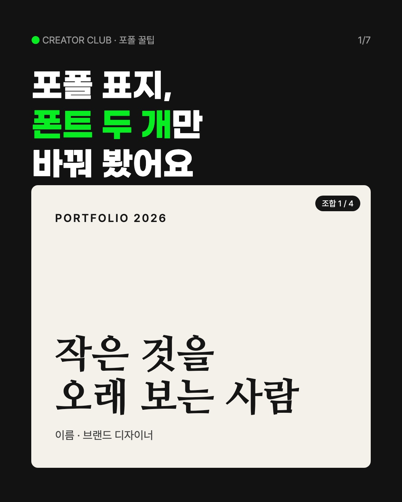
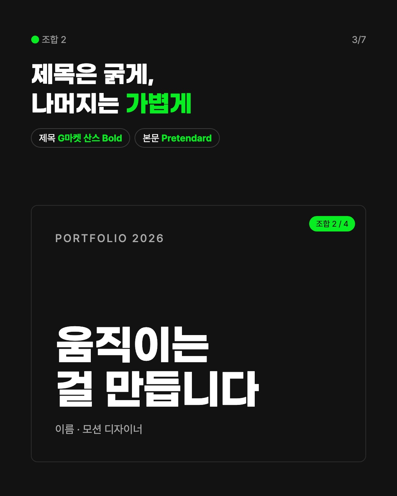
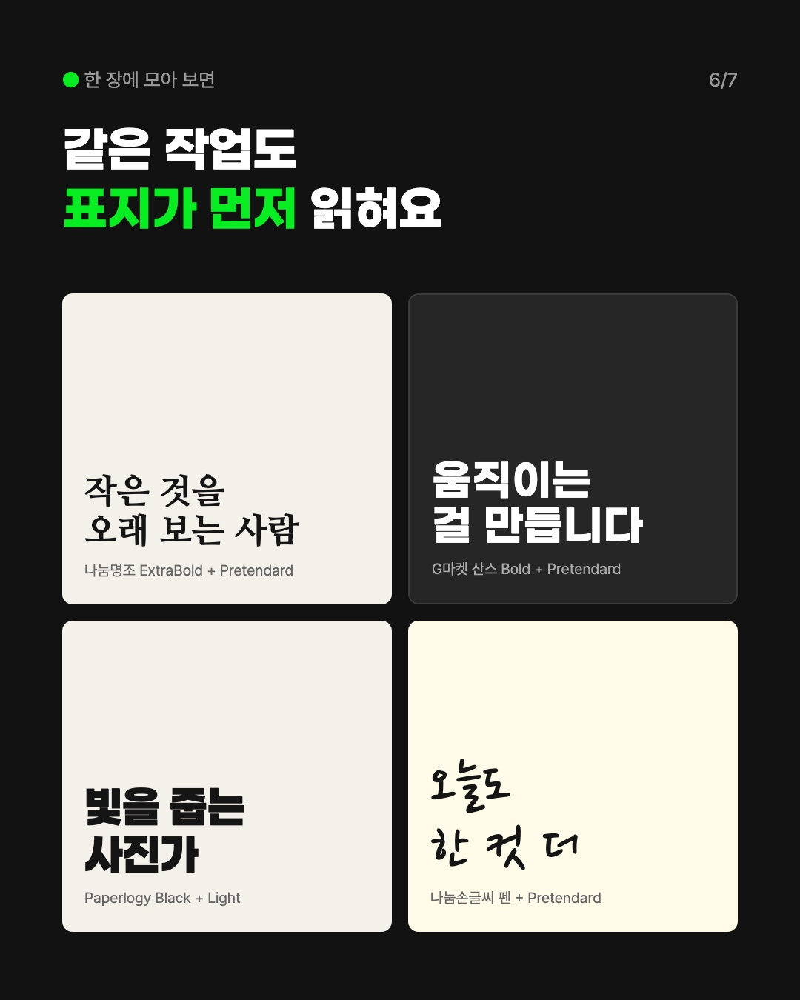
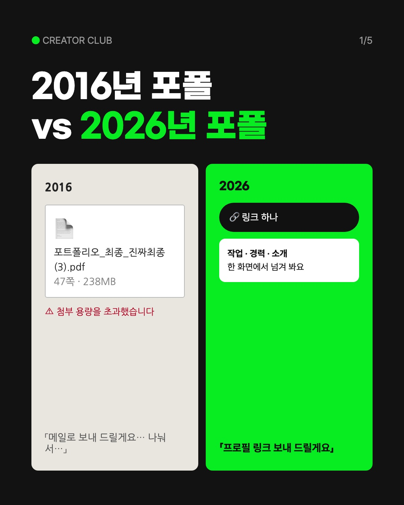
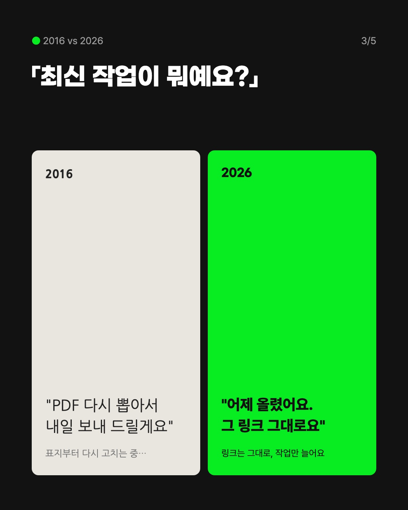
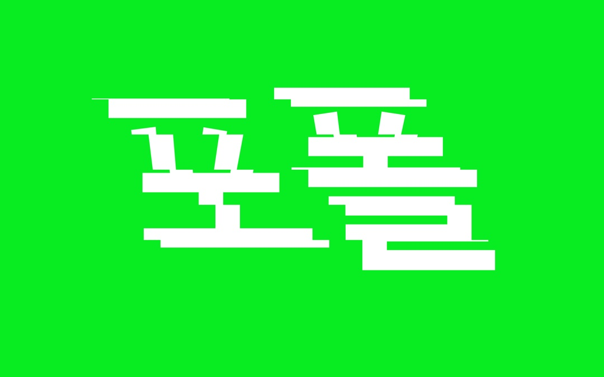
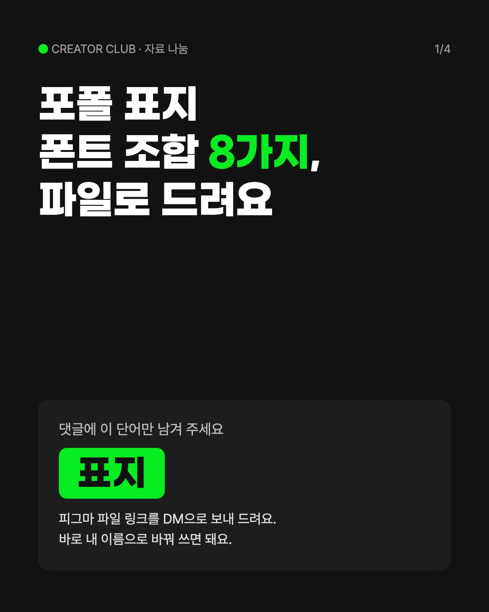

9월 초~10월 말 국내 인스타·스레드에서 디자이너·창작자 대상 팁 게시물을 모아, 10/30에 30개를 하나씩 다시 열어 날짜와 반응 수를 맞춰 봤어요. 아래 숫자는 모두 그때 본 값이에요. 시안 속 이름·문장은 가상이고, 인스타·스레드에는 아무것도 올리지 않았어요.



사진을 옆으로 밀면 넘겨 볼 수 있어요
같은 포폴 표지 하나에 폰트 조합만 네 번 바꿔 보여 줘요(나눔명조+Pretendard, G마켓 산스+Pretendard, Paperlogy 굵기 대비, 나눔손글씨 펜+Pretendard). 마지막 장은 네 개를 한 장에 모아 비교하고 저장을 부탁해요.
폰트 게시물이 이번 조사에서 가장 꾸준히 잘됐어요. 1회차 「포폴 표지 글자」와 이어지는 표지 시리즈가 되고, 그림도 실제 폰트로 바로 만들 수 있어 지어낼 게 없어요. 노트폴리오가 10/27에 폰트 글을 올렸으니, 우리는 「포폴 표지」 한 장면에 좁혀서 다르게 가요.
@baehausdesign 폰트 조합 8가지 좋아요 2,466 · @notefolio 디자이너들은 어떤 폰트를 477 · @tuisy.design 영문폰트 꿀조합 공유 43 · @remaincareer 포폴 표지, 매번 비슷하게 좋아요 42·댓글 49
네 폰트의 상업 이용 조건을 배포처에서 다시 확인해야 해요. 실제 회원 표지로 바꾸려면 본인 동의가 필요해요.


사진을 옆으로 밀면 넘겨 볼 수 있어요
한 장을 반으로 나눠 그때(PDF 47쪽, 첨부 용량 초과, 「내일 다시 뽑아 드릴게요」)와 지금(링크 하나, 「그 링크 그대로요」)을 나란히 놓아요. 장마다 상황 하나씩, 마지막 장에서 C8 프로필 링크로 이어요.
비교 밈은 이번 조사에서 좋아요가 가장 많이 몰린 결이에요. 팁이 아니라 웃음으로 오는 글이라 1회차 팁형 다음 공감 자리에 맞아요.
@beyondbetterbrand 2020 디자이너 vs 2026 디자이너 좋아요 3,183·댓글 79 · @baehausdesign 업워크 초반 포트폴리오 491
「링크는 그대로, 작업만 늘어요」가 실제 C8 프로필 공유 링크 동작과 맞는지 나나에게 확인받아야 해요.

C8 크루가 지난 회차 시안을 만들며 실제로 쓴 것 세 개만 짧게 적고, 사진은 그때 타입툴즈로 뽑은 「포폴」 한 장을 붙여요. 끝에 「이번 달에 새로 쓴 거」를 물어 답글을 받아요.
스레드는 사진보다 「내가 써 봤다」는 짧은 목록이 퍼져요. 셋 다 이미 써 본 거라 지어낼 게 없고, 인스타 1회차와 같은 소재라 품이 거의 안 들어요.
@dongle2blog 이번달에 새로 쓰기 시작한 것 좋아요 140·답글 21 · @remaincareer 크래프팅 앱 13개 좋아요 297·공유 222 · @eroon_design 눈누 폰트 추천 77
C8 공식 스레드 계정이 있는지 아직 몰라요. 없으면 인스타 계정에 붙은 스레드를 새로 열어야 해요.

A안의 폰트 조합을 피그마 파일로 묶어, 댓글에 「표지」를 남긴 사람에게 DM으로 보내요.
이번 조사에서 댓글 수가 가장 큰 게시물은 거의 다 이 방식이었어요. 댓글이 좋아요보다 많아질 만큼 강해요.
@ai_dori_ 좋아요 4,310·댓글 2,129 · @ai.trend.kr 871·1,008 · @grimiartdesign 외주 공식 204·1,145
DM을 자동으로 보내려면 C8 인스타를 연결해야 하는데, 게시 자동화와 함께 보류 중이에요. 메타가 반응을 억지로 끌어내는 글을 덜 보여 줄 수 있다는 점도 확인해야 해요. 그래서 A안이 반응을 얻은 다음 순서로 둬요.
국내 인스타 10 · 국내 스레드 10 · 포폴·커리어 팁 10(인스타·스레드). 전부 링크를 다시 열어 10/30 수치로 맞췄어요. 정리는 학습 노트 「본 게시물」에 옮겨 뒀어요.